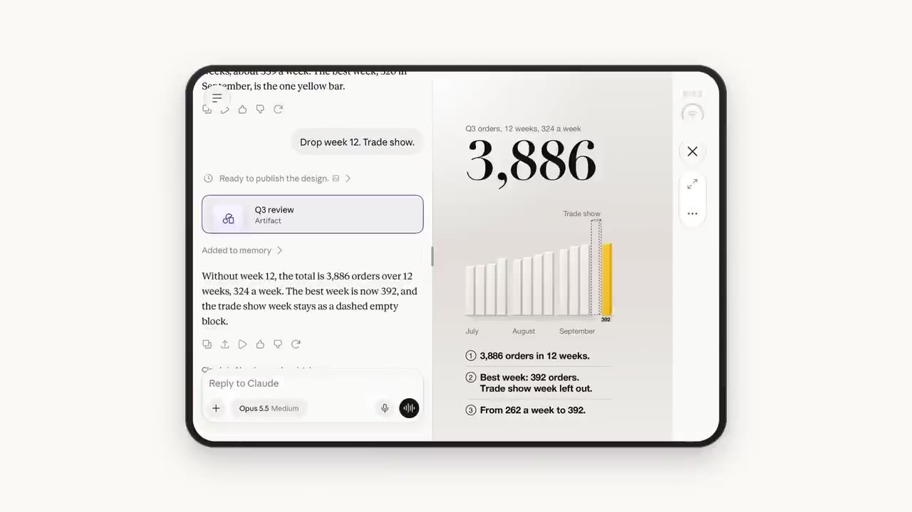
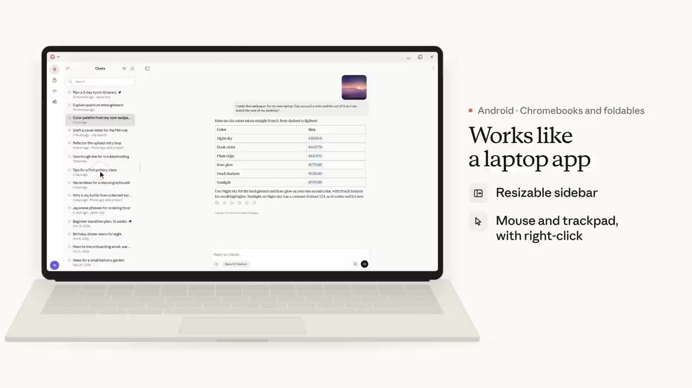
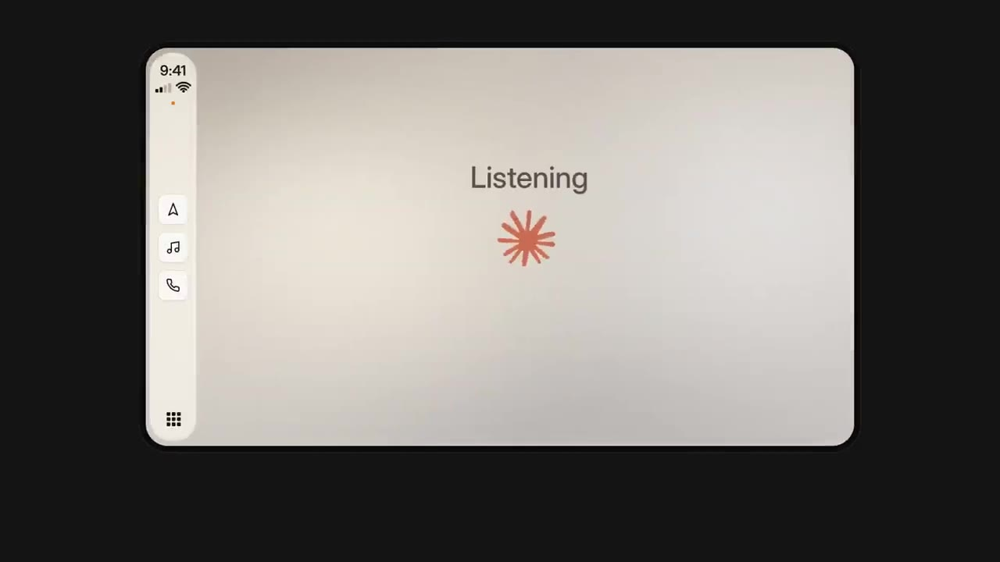

한눈에 보기
- iPhone Duo를 펼치거나 iPad에서 쓰면 Claude가 만든 결과물(차트 등)이 대화를 가리지 않고 옆 칸에 열린다.
- iOS·Android에서 회사 계정과 개인 계정에 동시에 로그인한 채 로그아웃 없이 바꿔 쓸 수 있다.
- Chromebook·폴더블의 Android 앱은 사이드바 크기 조절, 마우스·트랙패드, Claude Desktop과 같은 단축키를 지원해 노트북 앱처럼 쓸 수 있다.
- 음성 모드는 더 빨리 답하고 시끄럽거나 작은 목소리도 더 잘 알아들으며, iPhone에서는 Apple CarPlay로도 쓸 수 있다.
- 앱 메뉴·설정이 24개 언어가 늘어 모두 33개 언어로 나오고, iPhone·iPad에는 '당겨서 검색'이 곧 추가된다.
이런 분께 도움이 됩니다
- iPad·폴더블·Chromebook에서 Claude를 쓰는 분: 큰 화면을 제대로 활용하는 새 기능을 알 수 있습니다.
- 회사·개인 계정을 나눠 쓰거나, 운전·이동 중 음성으로 Claude를 쓰는 분에게 특히 쓸모 있는 업데이트입니다.
핵심 내용
큰 화면에서 결과물이 대화 옆에 열린다 (iPhone Duo·iPad)
- iPhone Duo를 펼치면 Claude가 만든 차트가 대화 바로 옆 별도 칸에 열린다. (0:03)

- Claude가 아직 만드는 중에도 열리므로, 결과물을 읽으면서 동시에 수정 요청을 이어 갈 수 있다.
- 자세히 보고 싶으면 전체 화면으로 키우고, 다 보면 다시 옆 칸으로 돌아간다.
- iPad도 같은 배치를 지원한다: 아티팩트(Claude가 만든 차트·문서 같은 결과물)가 대화를 덮지 않고 옆에 머문다. (0:44)
- Duo에서는 조작 버튼이 화면 가장자리 툴바에 모여 손이 쉽게 닿는다.
- 창 두 개를 나란히 띄워 각각 다른 대화나 Claude Code 세션을 돌릴 수 있다. (0:58)
- 진행자는 iPad에서 한쪽은 계획, 다른 쪽은 만들기에 쓴다고 소개한다.
💡 결과물을 보느라 대화를 닫을 필요가 없다 — 보면서 바로 고쳐 달라고 할 수 있다.
Chromebook·폴더블에서는 노트북 앱처럼 (Android)
- Chromebook이나 폴더블에서 Android 앱이 노트북 앱에 가깝게 바뀌었다. (1:09)
- 크기를 조절할 수 있는 사이드바
- 마우스·트랙패드 지원, 오른쪽 클릭 가능
- Claude Desktop과 같은 키보드 단축키 — 컴퓨터에서 쓰던 단축키가 그대로 통한다.

여러 계정 동시 로그인·사진 바로 첨부
- 가장 요청이 많았던 기능: 회사 계정과 개인 계정에 함께 로그인한 채로 로그아웃 없이 오갈 수 있다(iOS·Android). (0:15)
- iPhone에서는 사진을 고르는 즉시 대화에 나타나고, 업로드는 뒤에서 진행되므로 그동안 계속 입력할 수 있다.
음성 모드 개선과 CarPlay
- 음성 모드가 더 빨리 답하고, 시끄러운 방이나 작게 말할 때도 더 잘 알아듣는다(진행자는 사무실에서 쓸 때 체감했다고 함). (1:20)
- Android: 음성 모드를 쓸 수 있는 휴대폰 기종이 늘었다.
- iPhone: Apple CarPlay에서 음성 모드를 쓸 수 있어, 운전 중 손을 운전대에 둔 채 질문할 수 있다. (1:38)
- 영어 외 언어의 음성도 더 자연스러워졌다.

앱 언어 33개로 확대
- 앱이 24개 언어를 더 지원해 웹·데스크톱·iOS·Android 합쳐 모두 33개 언어가 됐다. (1:49)
- 대화 자체는 원래 이 언어들로 가능했고, 이번에는 메뉴와 설정 화면까지 모국어로 바뀐다.
곧 나올 기능: 당겨서 검색 (iPhone·iPad)
- 곧 iPhone·iPad에서 화면을 아래로 당기면 검색이 열린다 — 예전 대화·프로젝트를 찾거나 설정으로 바로 갈 수 있다. (2:13)
- 이 검색은 웹·데스크톱에는 이미 있다: Mac에서는
Command K. (2:20)
기억할 숫자·인용
- 24개 언어 추가 → 모두 33개 언어 (웹·데스크톱·iOS·Android)
- Mac 검색 단축키:
Command K - 여러 계정 동시 로그인: "가장 요청이 많았던 기능 중 하나"
생각해볼 점
- (영상 내용) '당겨서 검색'은 아직 나오지 않은 기능이고 출시 시점은 "곧(soon)"이라고만 했다.
- (영상 내용) 결과물 옆 칸 배치는 iPhone Duo·iPad, 노트북형 화면은 Chromebook·폴더블 한정이라 일반 휴대폰에서는 해당하지 않는다.
- (내 의견) 음성 모드가 "더 빨라졌다"는 수치 없이 체감으로만 소개됐으니, 직접 써 보고 판단하는 편이 좋다. 새로 추가된 33개 언어 목록에 한국어가 들어 있는지도 영상에는 나오지 않는다.
바로 해볼 일
- 앱을 최신 버전으로 업데이트하고, 회사·개인 계정을 모두 추가해 로그아웃 없이 전환되는지 확인하기
- Mac의 Claude 데스크톱이나 웹에서
Command K를 눌러 예전 대화를 검색해 보기 - iPad를 쓴다면 차트를 만들어 달라고 해서 결과물이 대화 옆에 열리는지 확인하기